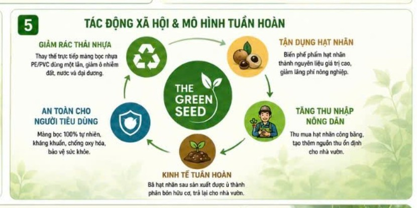

01
Thu nhận hạt nhãn
Tạo một hướng đầu ra mới cho phụ phẩm sau chế biến.
Tác động bền vững
The Green Seed hướng tới tạo tác động đồng thời cho môi trường, nông nghiệp và người sử dụng, thay vì chỉ thay một loại vật liệu bằng một loại vật liệu khác.

Mô hình tuần hoàn
Tạo một hướng đầu ra mới cho phụ phẩm sau chế biến.
Chuyển hóa nguyên liệu thành mẫu màng sinh học có khả năng ứng dụng.
Hướng tới giảm lượng màng PE/PVC dùng một lần trong đời sống và F&B.
Nghiên cứu khả năng tận dụng bã nguyên liệu làm phân bón hữu cơ.
Ba lớp tác động
Giảm phụ thuộc vào nhựa dùng một lần và tận dụng phụ phẩm nông nghiệp.
Mở ra khả năng tăng giá trị cho hạt nhãn và tạo thêm nguồn thu cho nhà vườn.
Hướng tới một lựa chọn vật liệu sinh học tiện dụng và minh bạch hơn.
Tạo cơ hội thử nghiệm giải pháp bao gói phù hợp định hướng ESG.